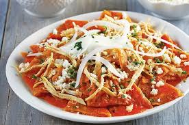

Chilaquiles

Lista de Ingredientes
- 24 tortillas de maiz
- aceite
- 4 chiles guajillos
- 1 tomate
- 4 dientes de ajo
- ¼ de cucharadita de comino molido
- 1 cubito de caldo de pollo
- sal al gusto
- 2 tazas de pechuga de pollo cocinada y desmenuzada
- 1 taza de cebolla picada
- 1 taza de queso
Intrucciones:
- corta las tortillas en triangulos y extiendelas en una bandeja para que se sequen y luego frielas en el aceite.
- EN una olla agrega 2 tazas de agua y agrega los tomates y cebolla, y los chiles para crear la salsa. y luego de 8 minutos retira y licua el resultado.
- en un plato coloca las tortillas tostadas y agrega la salsa encima y luego el pollo.
Informacion nutricional
- 190 g contienen 435 calorias
- 16.8g de grasas
- 36.8g de carbohidratos
- 34.2g de proteina
Video tutorial